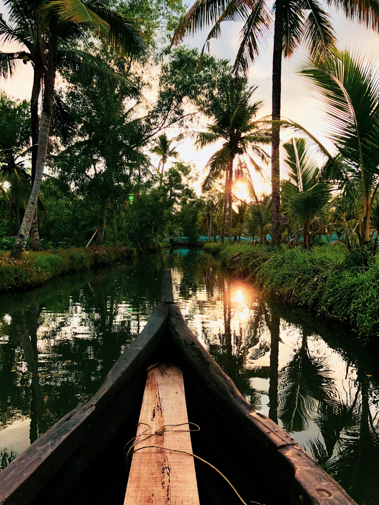

Kerala Backwaters are a network of serene lagoons, lakes, and canals running parallel to the Arabian Sea.
Known for lush green coconut trees, houseboat rides, and peaceful villages, this destination gives a
glimpse of traditional Kerala life.
Alleppey, Kumarakom, and Kollam are the most famous backwater regions where tourists enjoy houseboat cruises, birdwatching, and authentic Kerala cuisine.
Alleppey, Kumarakom, and Kollam are the most famous backwater regions where tourists enjoy houseboat cruises, birdwatching, and authentic Kerala cuisine.



Tips for Visit
- Best season: October–March for pleasant weather.
- Book a houseboat in advance during peak season.
- Try local dishes like Kerala fish curry and appam.
- Carry light cotton clothes and sunscreen.

Ramesh Kumar
15 yrs guiding in Agra
⭐⭐⭐⭐⭐
Farida Begum
Mughal history specialist
⭐⭐⭐⭐☆
Imran Ali
Speaks English, Hindi, French
⭐⭐⭐⭐⭐
Priya Sharma
Cultural & heritage tours
⭐⭐⭐⭐
Local Services
| NAME | CONTACT |
|---|---|
| Tourist Helpline | +91-471-2321132 |
| Houseboat Booking | +91-9847001234 |
| Hotel Assistance | +91-471-2334455 |
| Emergency | 100 / 108 |
Nearby Places
| NAME | Location | Highlights |
|---|---|---|
| Kumarakom | Kottayam | Bird sanctuary |
| Vembanad Lake | Alleppey | Largest lake in Kerala |
| Kollam | South Kerala | Traditional backwater gateway |